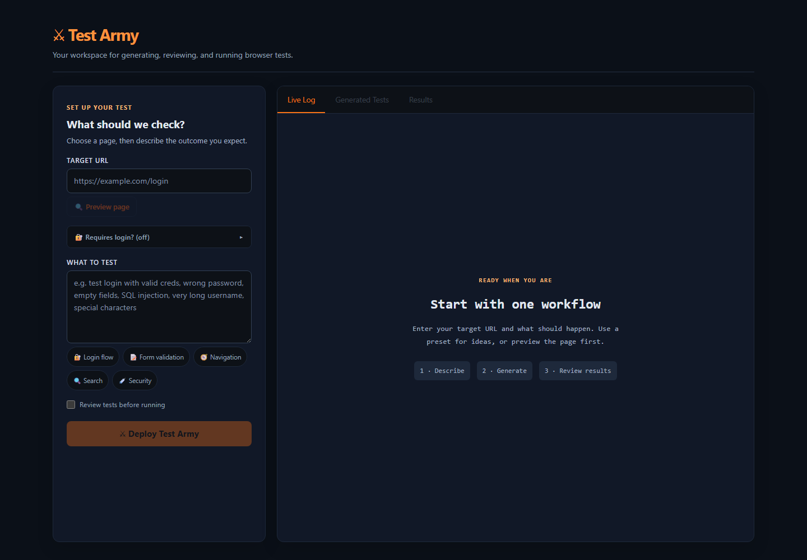

01⌕
Inspect
Preview a target page. Test Army collects visible structure, controls, and a small sample of rows to guide the scenarios.
PAGE CONTEXTLOCAL BROWSER QA
Test Army turns a page and a plain-language goal into editable Playwright checks, then gives you a clear place to run them and inspect the results.
Runs locally on your machine. AI generation uses the provider you configure.
THE WORKSPACE
Describe the behavior, inspect the target, review generated code, and follow each result.

A REVIEWABLE FLOW
AI can draft the steps. You stay in control of the code and the decision to run it.
Preview a target page. Test Army collects visible structure, controls, and a small sample of rows to guide the scenarios.
PAGE CONTEXTAsk a configured AI provider for Playwright code. Edit the draft in the app, or choose review mode to approve it before a run.
YOUR REVIEWRun browser checks and inspect each status, error, and available failure screenshot. Rerun edited code when ready.
RUN EVIDENCECLEAR DATA BOUNDARIES
Test Army is a local application. AI generation sends a limited page context to the provider you select.
Sessions expire after eight hours and are cleared when the backend restarts.
Login credentials are not included in the generation prompt. Provider terms still apply to the page context you send.
Review generated code before running it. Generated tests currently execute with host access; worker isolation is planned security work.
UNDER THE HOOD
The current project keeps its local UI, service, and browser runner in one repository.
IN PROGRESS
The roadmap tracks what is implemented, under review, and still planned. E2E checks reduce risk; they cannot prove the absence of defects.
READY TO TAKE A LOOK?